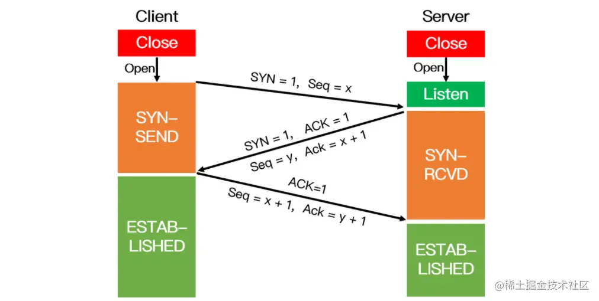
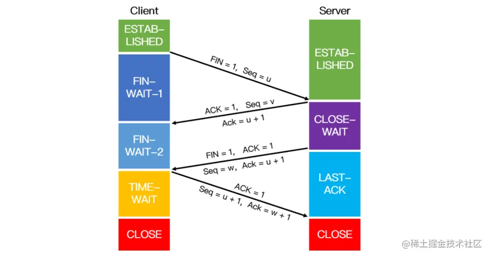
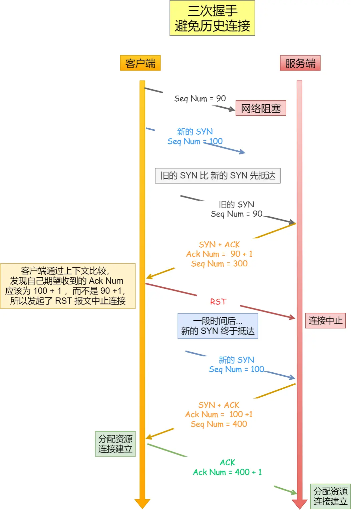
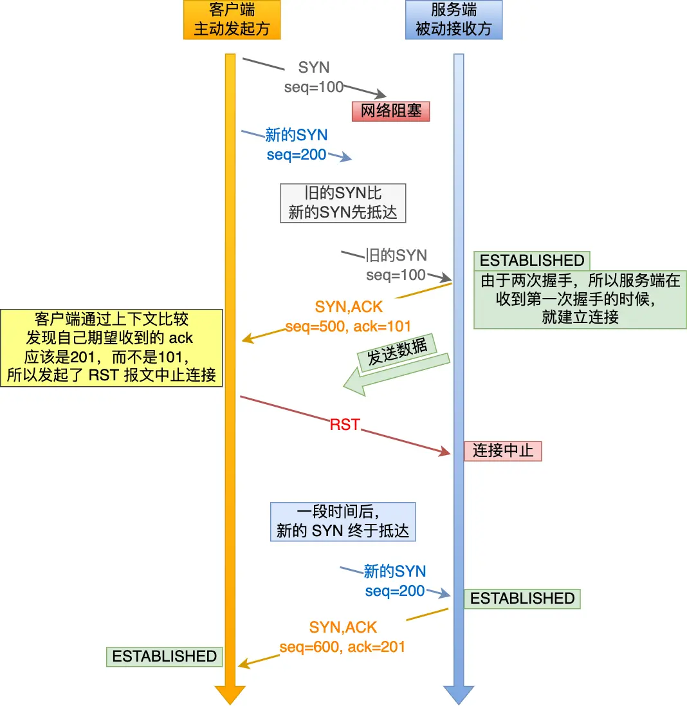
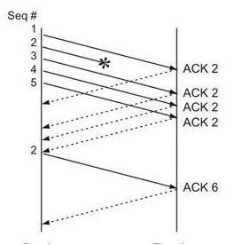
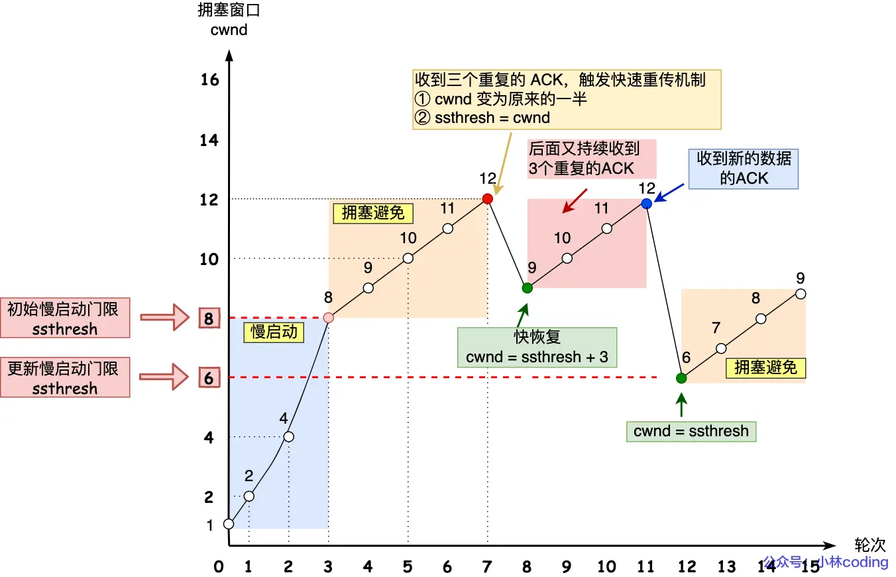
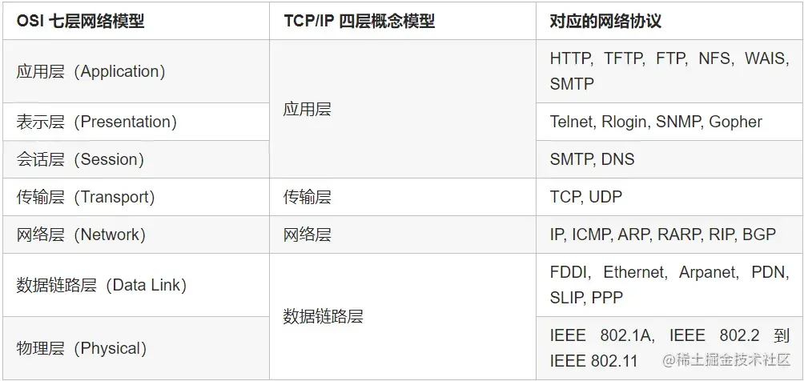

三次握手过程

四次挥手过程

为什么 TCP 要三次握手？
- 最主要原因就是防止「历史连接」初始化了连接。
- 三次握手才可以同步双方的初始序列号  
为什么 TCP 要四次挥手
- 关闭连接时，客户端向服务端发送 FIN 时，仅仅表示客户端不再发送数据了但是还能接收数据。
- 服务端收到客户端的 FIN 报文时，先回一个 ACK 应答报文，而服务端可能还有数据需要处理和发送，等服务端不再发送数据时，才发送 FIN 报文给客户端来表示同意现在关闭连接。
TCP 三次握手失败会发生什么
第一次握手失败
- 客户端重传 SYN 包，直到连接成功或者超时（每次等待两倍时间）
- 如果服务器无法响应，那么会发送 RST 包，表示拒绝连接
第二次握手失败
- 客户端就觉得可能自己的 SYN 报文（第一次握手）丢失了，于是客户端就会触发超时重传机制，重传 SYN 报文。
- 服务端这边会触发超时重传机制，重传 SYN-ACK 报文。
第三次握手失败
因为这个第三次握手的 ACK 是对第二次握手的 SYN 的确认报文，所以当第三次握手丢失了，如果服务端那一方迟迟收不到这个确认报文，就会触发超时重传机制，重传 SYN-ACK 报文，直到收到第三次握手，或者达到最大重传次数。 注意，ACK 报文是不会有重传的，当 ACK 丢失了，就由对方重传对应的报文
列举常用的 HTTP 状态码
HTTP 状态码是指在 HTTP 协议中，服务器向客户端返回的响应状态码。HTTP 状态码由三位数字组成，第一位数字表示响应类型，后两位数字没有具体分类作用。常见的 HTTP 状态码如下：
- 1xx：信息响应类，表示服务器已接收到客户端的请求，需要进一步处理。
- 2xx：成功响应类，表示服务器已成功地接收到客户端的请求并返回响应结果。
- 3xx：重定向响应类，表示客户端需要进一步操作才能完成请求，如重定向到其他 URL。
- 4xx：客户端错误响应类，表示客户端请求存在错误或无法被服务器处理。
- 5xx：服务器错误响应类，表示服务器在处理请求时出现了错误或异常。
以下是常见的 HTTP 状态码及其含义：
- 200 OK：表示请求被成功处理，并返回响应结果。
- 301 Moved Permanently：表示请求的资源已经被永久移动到新的位置，客户端需要使用新的 URL。
- 302 Found：表示请求的资源已经被暂时移动到新的位置，客户端需要使用新的 URL，但是之后可能会恢复原来的位置。
- 304 Not Modified：表示客户端发送了一个条件请求，并且服务器认为客户端请求的资源没有被修改，因此不需要返回资源的实体内容，只需要返回响应头信息即可。
- 400 Bad Request ：请求报文中存在语法错误。
- 403 Forbidden ：请求被拒绝。
- 404 Not Found：表示请求的资源不存在或无法被找到。
- 500 Internal Server Error：表示服务器在处理请求时出现了未知的错误或异常。
除了上述常见的 HTTP 状态码，HTTP 协议中还有很多其他状态码，每个状态码都有其特定的含义和用途。在编写 Web 应用程序时，了解 HTTP 状态码的含义和使用方法，可以帮助我们更好地处理 HTTP 请求，提高程序的可靠性和稳定性。
GET 和 POST 请求
get是获取数据，post是修改数
HTTP 和 HTTPS
HTTP（Hypertext Transfer Protocol）和 HTTPS（Hypertext Transfer Protocol Secure）都是用于在 Web 上进行数据传输的协议，它们的主要区别在于安全性：
-
安全性：HTTP 是明文传输协议，数据在传输过程中没有加密，容易被窃听和篡改；HTTPS 利用 SSL/TLS 协议进行数据加密和身份认证，可以保证数据传输的安全性。
-
端口号：HTTP 使用的端口号为 80，而 HTTPS 使用的端口号为 443。
-
证书：HTTPS 需要使用数字证书对网站进行身份验证，证书由受信任的第三方机构颁发，可以保证网站的真实性和安全性；而 HTTP 没有身份验证机制，无法保证网站的真实性和安全性。
-
性能：HTTPS 比 HTTP 的性能要差一些，因为 HTTPS 需要进行加密和解密操作，会增加服务器和客户端的处理负担，导致响应速度变慢。
http 加密过程
HTTPS（Hypertext Transfer Protocol Secure）是一个用于安全传输数据的协议，它使用 SSL（Secure Sockets Layer）或 TLS（Transport Layer Security）协议来加密 Web 通信。以下是 HTTPS 的加密过程：
-
客户端发起 HTTPS 请求，请求连接到服务器。
-
服务器向客户端发送一个证书，证书中包含了服务器的公钥、证书的有效期、证书颁发机构等信息。
-
客户端收到证书后，会验证证书的有效性，包括证书是否过期、证书颁发机构是否可信等。如果证书有效，客户端会生成一个随机数，用于后续的加密通信。
-
客户端使用服务器的公钥加密随机数，并将加密后的随机数发送给服务器。
-
服务器使用自己的私钥解密客户端发来的随机数，并使用该随机数作为对称加密算法的密钥，用于后续的数据加密。
-
服务器使用对称加密算法对数据进行加密，并将加密后的数据发送给客户端。
-
客户端使用之前生成的随机数作为对称加密算法的密钥，解密服务器发来的数据，从而得到原始数据。
以上就是 HTTPS 的加密过程，通过使用 SSL 或 TLS 协议，可以确保数据在传输过程中的机密性、完整性和真实性。
输入网址到出现网页的全过程
输入网址到浏览器中，到收到网页的整个过程大致可以分为以下步骤：
-
DNS 解析：浏览器首先会解析输入的网址中的域名，将其转换为对应的 IP 地址。浏览器会先查找本地 DNS 缓存，如果没有找到匹配的 IP 地址，则会向 DNS 服务器发送请求，获取对应域名的 IP 地址。
-
建立 TCP 连接：浏览器向服务器发送 TCP 连接请求，建立 TCP 连接。在这个过程中，浏览器和服务器会通过三次握手协议建立连接。
-
发送 HTTP 请求：浏览器向服务器发送 HTTP 请求，请求获取特定资源，比如 HTML、CSS、JavaScript、图片等。
-
服务器响应：服务器接收到浏览器的 HTTP 请求后，会返回相应的资源内容以及 HTTP 状态码。
-
浏览器渲染：当浏览器接收到服务器返回的资源内容后，会根据 HTML、CSS 和 JavaScript 等文件进行解析，生成 DOM 和 CSSOM 树，并将其合并成渲染树。然后浏览器会根据渲染树进行布局和绘制，最终将网页内容显示在用户界面上。
在这个过程中，涉及到的协议主要有：
-
DNS 协议：用于域名解析，将域名转换为对应的 IP 地址。
-
TCP 协议：用于在浏览器和服务器之间建立可靠的连接，确保数据的可靠传输。
-
HTTP 协议：用于在浏览器和服务器之间传输资源内容，包括 HTML、CSS、JavaScript、图片等。
-
HTTPS 协议：用于在 HTTP 协议的基础上添加 SSL/TLS 协议进行加密通信，提高数据传输的安全性。
TCP 拥塞控制
拥塞控制是一种网络流量控制机制，它通过限制数据流的速度来防止网络拥塞和保持网络的稳定性。拥塞控制的几个常见机制包括：
-
慢启动：当发送方每收到一个 ACK，拥塞窗口 cwnd 的大小就会加 1。相当于 2 的指数倍增长 。
-
拥塞避免：每当收到一个 ACK 时，cwnd 增加 1/cwnd，变成了线性增长。
-
快速重传：当发送方发现某个数据包没有收到确认时，它会重传该数据包。然而，如果发送方连续发送了多个数据包而没有收到确认，它会认为网络出现了拥塞，并立即减慢发送速率。幸运的是，由于 TCP 采用的是累计确认机制，即当接收端收到比期望序号大的报文段时，便会重复发送最近一次确认的报文段的确认信号，我们称之为冗余 ACK（duplicate ACK）。
如图所示，报文段1成功接收并被确认ACK 2，接收端的期待序号为2，当报文段2丢失，报文段3失序到来，与接收端的期望不匹配，接收端重复发送冗余ACK 2。
这样，如果在超时重传定时器溢出之前，接收到连续的三个重复冗余ACK（其实是收到4个同样的ACK，第一个是正常的，后三个才是冗余的），发送端便知晓哪个报文段在传输过程中丢失了，于是重发该报文段，不需要等待超时重传定时器溢出，大大提高了效率。这便是快速重传机制。
 4. 快速恢复：当发送方减慢发送速率时，接收方会通知发送方可以增加发送速率。这种机制称为快速恢复，它可以帮助发送方更快地恢复正常的发送速率，而不是像慢启动一样重新开始。
正如前面所说，进入快速恢复之前，cwnd 和 ssthresh 已被更新了：
cwnd = cwnd/2 ，也就是设置为原来的一半;
ssthresh = cwnd;
然后，进入快速恢复算法如下：
拥塞窗口 cwnd = ssthresh + 3 （ 3 的意思是确认有 3 个数据包被收到了）；
重传丢失的数据包；
如果再收到重复的 ACK，那么 cwnd 增加 1；
如果收到新数据的 ACK 后，把 cwnd 设置为第一步中的 ssthresh 的值，原因是该 ACK 确认了新的数据，说明从 duplicated ACK 时的数据都已收到，该恢复过程已经结束，可以回到恢复之前的状态了，也即再次进入拥塞避免状态；

流量控制和拥塞控制分别解决了什么问题
流量控制是防止接收端被发送端的数据包淹没，确保接收端处理得过来。
拥塞控制是避免网络中的数据包太多，导致网络资源如路由器、链路等过载
http 长连接和短连接区别
长连接（Long Connection）
-
长连接在数据的传输结束后，仍然保持连接状态，可重复使用，直到客户端或服务器主动关闭。
-
场景：实时应用（如在线聊天、即时通讯）、数据库连接、HTTP/2 中的服务。 短连接（Short Connection）
-
短连接发送请求后，得到服务器响应就立刻断开。
-
场景：HTTP/1.0 协议、邮件发送/接收、FTP 文件传输。
哪些用 UDP 哪些用 TCP
应用层协议可以使用 TCP 或 UDP 进行数据传输，具体使用哪种传输协议，需要根据协议的特性和应用场景进行选择。下面是一些常见的应用层协议及其使用的传输协议：
使用 TCP 传输的应用层协议：
-
HTTP 协议：用于 Web 应用程序的数据传输。
-
FTP 协议：用于文件传输，支持文件上传和下载等操作。
-
SMTP 协议：用于电子邮件的传输。
-
SSH 协议：用于安全远程登录和文件传输。
-
Telnet 协议：用于远程登录主机进行命令行操作。
使用 UDP 传输的应用层协议：
-
DNS 协议：用于域名解析，将域名转换为 IP 地址。
-
DHCP 协议：用于动态 IP 地址分配，自动分配和管理 IP 地址。
-
TFTP 协议：用于简单文件传输，支持无连接传输方式。
-
SNMP 协议：用于网络管理和监控，实现对网络设备的远程管理。
-
RTP 协议：用于音视频数据的传输，支持实时传输和流媒体播放。
需要注意的是，有些应用层协议同时支持 TCP 和 UDP 传输，如 DNS 协议和 FTP 协议等，可以根据实际情况进行选择。
https ssl 连接的过程
HTTPS 加密过程简略如下：
-
客户端发送 HTTPS 请求，请求头中的
https字段设置为on。 -
服务器返回数字证书，包含服务器的公钥、证书颁发机构的信息、证书有效期等。
-
客户端验证证书合法性，确认无误后生成随机的会话密钥，并使用服务器的公钥将其加密后发送给服务器。
-
服务器使用自己的私钥解密会话密钥，得到原始的会话密钥。
-
双方使用会话密钥进行对称加密，保证通信过程中的数据安全性，并进行数字签名和身份认证，确保通信的可信性和完整性。
http1.0 和 http1.1 和 http2.0 的差别，分别做了哪几点优化
HTTP 1.0 是一种无状态，无连接的应用层协议。浏览器每次请求都需要与服务器建立一个TCP 连接，服务器处理完成以后立即断开 TCP 连接(无连接),服务器不跟踪也每个客户单，也不记录过去的请求(无状态) 。
HTTP 1.1 支持长连接和请求的流水线处理，在一个 TCP 连接上可以传送多个 HTTP 请求和响应，减少了网络延迟 。
HTTP 2.0 是基于二进制流的，可以分解为独立的帧，交错发送，从而提高了网络传输效率。
HTTP/3 是最新的版本，它使用了 QUIC 协议来提高网络传输效率。
HTTP 是一种应用层协议，常用于 Web 应用中，目前主要有 HTTP/1.0、HTTP/1.1 和 HTTP/2.0 三个版本。它们之间的主要差别及优化如下：
- HTTP/1.0 和 HTTP/1.1 的主要差别
HTTP 1.0
单一请求响应模型，每个请求/响应都会断开连接。 HTTP 1.1
-
持久连接：默认情况下，所有的连接都被认为是持久的，除非有明确的关闭。
-
管道化技术：在同一个 TCP 连接上可以传送多个 HTTP 请求和响应，减少了网络延迟。(复用 tcp 连接)
-
增加更多的缓存控制策略。
HTTP 2.0
-
多路复用：单一 TCP 连接中可并行交换多个 HTTP 请求/响应。
-
首部压缩：对头信息进行压缩，减少数据传输量。
-
服务器推送：允许服务器未经客户端明确请求就发送数据到客户端，提高性能。
HTTP 3.0
QUIC 协议来提高网络传输效率。
http 请求和报文有哪些字段
- 请求
- 请求行：Request Line
- 请求头：Request Headers
- 请求体：Request Body
- 相应
- 状态行：Status Line
- 响应头：Response Headers
- 响应体：Response Body
tcp 粘包现象
为什么会有粘包现象
TCP粘包问题是指发送方发送的若干个包数据到达接收方时，被接收方读取为一个数据包。
TCP 粘包是因为 TCP 基于字节流，不保证消息边界
- 因为TCP默认会使用Nagle算法，此算法会导致粘包问题。
- 只有上一个分组得到确认，才会发送下一个分组；
- 收集多个小分组，在一个确认到来时一起发送。
- TCP连接复用：在高并发环境下，同一个TCP连接可能会被多个请求复用，从而可能导致不同请求的数据包混杂在一起。
- 数据包过大：如果发送的数据包大于TCP的最大报文段长度（MSS - Maximum Segment Size），就需要对数据包进行分片。这个过程可能造成接收方处理来自同一数据包的分片时出现粘包
- 接收方不及时接收缓冲区的包：如果接收方不能及时处理其接收缓冲区的数据，新到达的数据包可能会与已存在的数据包混合，形成一个大的数据块，从而产生粘包。
解决 TCP 粘包现象的方法主要有以下几种：
-
增加消息边界：在消息头部添加消息长度字段，接收方根据消息长度进行数据的切割。
-
使用固定长度的消息：发送方将消息按照固定长度进行分割，接收方根据固定长度进行数据的切割。
-
使用特殊字符作为消息分隔符：发送方在消息尾部添加特殊字符作为消息分隔符，接收方根据特殊字符进行数据的切割。
-
使用应用层协议：在应用层协议中规定消息的格式和边界，从而避免粘包现象的发生。
-
Nagle算法问题导致的，需要结合应用场景适当关闭该算法
POST 和 GET 请求
-
get是获取数据，post是修改数据
-
get把请求的数据放在url上， 以?分割URL和传输数据，参数之间以&相连，所以get不太安全。而post把数据放在HTTP的包体内（request body 相对安全）
-
get提交的数据最大是2k（ 限制实际上取决于浏览器）， post理论上没有限制。
-
GET产生一个TCP数据包，浏览器会把http header和data一并发送出去，服务器响应200(返回数据); POST产生两个TCP数据包，浏览器先发送header，服务器响应100 continue，浏览器再发送data，服务器响应200 ok(返回数据)。
-
GET请求会被浏览器主动缓存，而POST不会，除非手动设置。
-
本质区别：GET是幂等的，而POST不是幂等的
这里的幂等性：幂等性是指一次和多次请求某一个资源应该具有同样的副作用。简单来说意味着对同一URL的多个请求应该返回同样的结果。
正因为它们有这样的区别，所以不应该且不能用get请求做数据的增删改这些有副作用的操作。因为get请求是幂等的，在网络不好的隧道中会尝试重试。如果用get请求增数据，会有重复操作的风险，而这种重复操作可能会导致副作用（浏览器和操作系统并不知道你会用get请求去做增操作）
tcp 如何保证可靠
TCP（Transmission Control Protocol）是一种面向连接的、可靠的传输协议，它通过以下机制来保证数据传输的可靠性：
-
序列号与确认应答机制：每个 TCP 报文段都有一个唯一的序列号和确认应答号，用于保证数据的顺序性和完整性。发送端将数据分成若干个报文段发送，每个报文段都有一个序列号，接收端收到报文段后需向发送端发送确认应答，确认应答号为接收到的数据的下一个期望的序列号。如果发送端接收到确认应答，就认为该报文段已经成功传输，可以将该报文段从发送缓冲区中删除。
-
超时重传机制：发送端在发送数据时会启动一个定时器，如果在指定时间内没有收到接收端的确认应答，发送端会判断该报文段丢失了，需要重新发送。接收端收到重复的报文段时，会丢弃该报文段，同时向发送端发送确认应答。
-
滑动窗口机制：TCP 使用滑动窗口机制来实现流量控制和拥塞控制。发送端和接收端都有一个窗口大小，用于限制发送和接收数据的速率。发送端发送数据时，需要等待接收端发送的确认应答，确认应答中包含接收端当前窗口的大小，发送端根据窗口大小来调整发送数据的速率。
-
拥塞控制
-
校验和：校验和（checksum）是一种用于检测数据传输过程中是否发生错误的技术。在数据传输过程中，可能会出现各种各样的错误，比如说数据损坏、数据重复、数据丢失等，这些错误都可能导致数据传输失败或者数据被篡改。校验和技术可以通过计算数据的校验和值来检测这些错误，从而保证数据传输的可靠性。
通过以上机制，TCP 可以保证数据传输的可靠性，并且在网络出现拥塞时可以进行拥塞控制，避免网络拥塞导致数据丢失或传输延迟增加。
滑动窗口
ping 的过程
主要是 icmp Ping 是一种常用的网络诊断工具，用于测试主机之间的连通性。当我们使用 Ping 命令时，Ping 程序会执行以下步骤：
-
发送 ICMP Echo Request 消息：Ping 程序向目标主机发送一个 ICMP Echo Request 消息，该消息包含一个随机的标识符和序列号。
-
接收 ICMP Echo Reply 消息：目标主机收到 ICMP Echo Request 消息后，会向发送方返回一个 ICMP Echo Reply 消息，该消息包含与 Echo Request 消息相同的标识符和序列号。
-
计算往返时间（RTT）：Ping 程序在接收到 Echo Reply 消息后，会计算从发送 Echo Request 消息到接收 Echo Reply 消息所需的时间，即往返时间（RTT）。
-
显示结果：Ping 程序将计算得到的 RTT 值和其他一些统计信息显示在屏幕上。如果目标主机无法到达，Ping 程序会返回一个错误消息。
需要注意的是，Ping 命令使用的是 ICMP 协议，而不是 TCP 或 UDP 协议。因此，Ping 命令可以用于测试主机之间的连通性，但不能用于测试 TCP 或 UDP 服务的可用性。此外，由于 ICMP 消息可以被防火墙和路由器过滤，因此在某些情况下，Ping 命令可能无法正常工作。
mac 寻址和 ip 寻址的差异
mac 寻址在数据链路层，ip 寻址在网络层
数据链路层的作用
1、封装成帧 2、流量控制 3、差错控制 4、mac 寻址 5、透明传输
网络层的作用
管理数据包的传输和路由选择，将数据包从源节点传输到目的节点。 实现IP（Internet Protocol）协议，负责数据包的分组、传输和路由选择。
提供差错控制和流量控制功能，确保数据包传输的可靠性和效率。
实现路由选择算法，根据网络拓扑结构和路由策略选择最佳的路径将数据包传输到目的节点。
实现地址转换（NAT，Network Address Translation）等功能，将内部私有地址转换为公网可用的地址，以实现网络连接与安全性的需求。
子网掩码
子网掩码（subnet mask）是用于划分网络地址和主机地址的一个 32 位数值，用于告诉网络设备哪些位是网络地址，哪些位是主机地址。子网掩码通常与 IP 地址配合使用，用于指示网络中哪些位是网络地址，哪些位是主机地址。
子网掩码的作用是将一个 IP 地址分成两部分：网络地址和主机地址。网络地址用于标识网络，而主机地址用于标识特定的主机。
子网掩码的格式通常是四个 8 位二进制数，例如 255.255.255.0。这个子网掩码表示前 24 位是网络地址，后 8 位是主机地址。这意味着，对于该子网掩码的网络，可以有 256 个主机地址（2 的 8 次方），因为最后 8 位可以有 256 种不同的组合。
在计算机网络中，子网掩码有助于划分网络和管理 IP 地址。通过使用子网掩码，网络管理员可以将一个大的 IP 地址空间分成多个子网，以便更有效地管理网络。例如，一个大的 IP 地址空间可以划分为多个小的子网，每个子网可以被分配给不同的部门或办公室，以便更好地管理网络流量和安全。
UDP 和 TCP 的区别，适用场景
1.TCP 是面向连接的协议，建立和释放连接需要进行三次握手和四次挥手。UDP 是面向无连接的协议，无需进行三次握手和四次挥手。说明 udp 比 TCP 实时性更强。
2.TCP 是流式传输，没有边界，但保证顺序和可靠。UDP 是一个包一个包的发送，是有边界的，但可能会丢包和乱序。
3.TCP 连接的可靠性强，UDP 的可靠性不强。
4.TCP 只能一对一，UDP 支持一对多和多对多。
5.TCP 的头部开销比 UDP 大。TCP 首部长度较长，会有一定的开销，首部在没有使用「选项」字段时是 20 个字节，如果使用了「选项」字段则会变长的。UDP 首部只有 8 个字节，并且是固定不变的，开销较小。
TCP 适用于对数据传输的可靠性要求较高的场景，如文件传输（ftp）、电子邮件（stmp）、网页浏览（http）等；UDP 适用于对数据传输的可靠性要求较低、数据传输速度要求较高的场景，如在线游戏、实时音视频、DNS 等。
为什么会出现大量的 close_wait 状态，如何解决
TIME_WAIT 状态是因为频繁地建立和关闭连接，或者连接关闭不规范等。
解决办法：
- 调整 TCP 参数如 TIME_WAIT 时间。
- 优化程序设计，比如使用连接池。
- 使用 SO_REUSEADDR 共用端口。
- 使用负载均衡器分摊连接负载。少 time_wait 状态的出现。
交换机位于哪一层
交换机位于数据链层，负责在同一网络下中转发数据帧。它能够根据目标 MAC 地址来决定数据帧的转发路径，以实现同一网络内的通信。 路由器是一种网络设备，主要用于在不同的网络之间转发数据包。
五层网络中的各层协议有啥

DNS 过程
以下是 DNS 解析 www.example 的过程：
-
当用户在浏览器中输入 www.example 时，浏览器会向本地 DNS 服务器发送 DNS 解析请求。
-
如果本地 DNS 服务器缓存了该域名的解析信息，它将直接返回该域名的 IP 地址。否则，它将向根域名服务器发送请求。
-
根域名服务器将返回.com 顶级域名服务器的地址。
-
本地 DNS 服务器随后向.com 顶级域名服务器发送请求，并返回该域名的权威域名服务器地址。
-
本地 DNS 服务器向该权威域名服务器发送请求，并返回该域名的 IP 地址。
-
本地 DNS 服务器将该 IP 地址缓存起来，并将其返回给用户的计算机或设备。
-
用户的计算机或设备使用该 IP 地址与该域名的服务器进行通信，以获取网站的内容。
为什么三次握手，两次不行吗
弄清这个问题，我们需要先弄明白三次握手的目的是什么，能不能只用两次握手来达到同样的目的。
- 第一次握手：客户端发送网络包，服务端收到了。 这样服务端就能得出结论：客户端的发送能力、服务端的接收能力是正常的。
- 第二次握手：服务端发包，客户端收到了。 这样客户端就能得出结论：服务端的接收、发送能力，客户端的接收、发送能力是正常的。不过此时服务器并不能确认客户端的接收能力是否正常。
- 第三次握手：客户端发包，服务端收到了。 这样服务端就能得出结论：客户端的接收、发送能力正常，服务器自己的发送、接收能力也正常。 因此，需要三次握手才能确认双方的接收与发送能力是否正常。
试想如果是用两次握手，则会出现下面这种情况：
如客户端发出连接请求，但因连接请求报文丢失而未收到确认，于是客户端再重传一次连接请求。后来收到了确认，建立了连接。数据传输完毕后，就释放了连接，客户端共发出了两个连接请求报文段，其中第一个丢失，第二个到达了服务端，但是第一个丢失的报文段只是在某些网络结点长时间滞留了，延误到连接释放以后的某个时间才到达服务端，此时服务端误认为客户端又发出一次新的连接请求，于是就向客户端发出确认报文段，同意建立连接，不采用三次握手，只要服务端发出确认，就建立新的连接了，此时客户端忽略服务端发来的确认，也不发送数据，则服务端一致等待客户端发送数据，浪费资源。
https 加密是对称的还是不对称的
HTTPS 采用混合的加密机制，使用非对称密钥加密用于传输对称密钥来保证传输过程的安全性，之后使用对称密钥加密进行通信来保证通信过程的效率。
流量控制如何实现的
流量控制是使用滑动窗口来实现的。接收方确认报文中的窗口字段可以用来控制发送方窗口的大小。
如果窗户的值为 0，则发送方停止发送数据，但是发送方会定期的向接收方发送窗口探测报文以得到窗口的大小。
补充
TCP 传输协议中，流量控制是使用滑动窗口（Sliding Window）来实现的。滑动窗口是一种基于数据流的、动态调整的、可变大小的窗口，它通过协商双方的接收窗口和发送窗口大小，控制数据的传输速率。
在 TCP 协议中，每个数据包都有一个序号，接收方通过序号来确认是否收到了正确的数据包。发送方将数据分成若干个数据段(数据段"是指传输的基本单位。当应用程序向 TCP 层发送大量数据时，TCP 会将这些数据分割为适合网络传输的大小，每一部分被称为一个"数据段"。)，每个数据段的大小不超过发送窗口的大小，然后将这些数据段发送给接收方。接收方会确认已经收到的数据，同时告诉发送方自己的接收窗口大小。发送方根据接收方的窗口大小，动态调整自己的发送窗口大小，从而控制数据的传输速率。
滑动窗口的大小是可以动态调整的，它可以根据网络状况和双方的能力来自适应地调整，从而实现流量控制的功能。如果接收方的接收窗口变小，发送方会相应地减小自己的发送窗口，以避免过多的数据堆积在网络中导致拥塞。如果接收方的接收窗口变大，发送方会相应地增加自己的发送窗口，以提高数据传输速率。
close_wait time_wait fin_wait2
- fin_wait2 还有数据接收能力，但是没有数据发送能力
- close_wait 还有数据要发送就进入这状态
- time_wait 又叫 2MSL 等待状态。防止最后一次 ack 没有接收到，在这个阶段中，同一个 socket 不能再被使用
流量控制
-
目的是接收方通过 TCP 头窗口字段告知发送方本方可接收的最大数据量，用以解决发送速率过快导致接收方不能接收的问题。所以流量控制是点对点控制。
-
TCP 是双工协议，双方可以同时通信，所以发送方接收方各自维护一个发送窗和接收窗。
- 发送窗：用来限制发送方可以发送的数据大小，其中发送窗口的大小由接收端返回的 TCP 报文段中窗口字段来控制，接收方通过此字段告知发送方自己的缓冲（受系统、硬件等限制）大小。
- 接收窗：用来标记可以接收的数据大小。
-
TCP 是流数据，发送出去的数据流可以被分为以下四部分：已发送且被确认部分 | 已发送未被确认部分 | 未发送但可发送部分 | 不可发送部分，其中发送窗 = 已发送未确认部分 + 未发但可发送部分。接收到的数据流可分为：已接收 | 未接收但准备接收 | 未接收不准备接收。接收窗 = 未接收但准备接收部分。
-
发送窗内数据只有当接收到接收端某段发送数据的 ACK 响应时才移动发送窗，左边缘紧贴刚被确认的数据。接收窗也只有接收到数据且最左侧连续时才移动接收窗口。\
Session和cookie应该如何去选择
Session和Cookie都是用来跟踪浏览器用户身份的会话技术，但它们之间有一些关键的区别：
-
存储位置：
Cookie数据存放在客户端（浏览器）。Session数据存放在服务器。
-
生命周期：
Cookie只在设置的cookie过期时间之前一直有效，即使窗口或浏览器关闭。Session默认情况下，仅在浏览器运行期间存在，关闭浏览器则Session结束。开发者也可以设置Session的失效时间。
-
存储大小：
Cookie的大小受限制。它依赖于浏览器的不同可能有所不同，一般为4KB左右。Session没有大小限制，可以存储较大量的数据。
-
安全性：
Cookie存储在客户端，相对容易被篡改，比较不安全。Session存储在服务器端，相对较安全。
-
跨域问题：
Cookie只能在同源的情况下共享。Session由于存储在服务器上，可以在多个不同域名的页面间共享。
-
Cookie 只能存储 ASCII 码字符串，而 Session 则可以存储任何类型的数据，因此在考虑数据复杂性时首选 Session；
-
Cookie 存储在浏览器中，容易被恶意查看。如果非要将一些隐私数据存在 Cookie 中，可以将 Cookie 值进行加密，然后在服务器进行解密；
-
对于大型网站，如果用户所有的信息都存储在 Session 中，那么开销是非常大的，因此不建议将所有的用户信息都存储到 Session 中。
JWT token是什么？
JWT Token是一种用于身份验证和授权的安全令牌，包含了用户的信息和数字签名，可以在多个系统间共享。
JWT由三部分组成：头部(Header)、载荷(Payload)和签名(Signature)。其中:
- 头部包含令牌类型、算法、发行者、受众和有效期等信息；
- 载荷包含用户信息；
- 签名则是对整个JWT进行加密签名，以保证其安全性。
Token是一个用于访问资源的凭证，它包含了身份验证信息和关联的元数据。
udp如何实现可靠传输
最简单的方式是在应用层模仿传输层TCP的可靠性传输。下面不考虑拥塞处理，可靠UDP的简单设计。
1、添加seq/ack机制，确保数据发送到对端
2、添加发送和接收缓冲区，主要是用户超时重传。
3、添加超时重传机制。 详细说明：送端发送数据时，生成一个随机seq=x，然后每一片按照数据大小分配seq。数据到达接收端后接收端放入缓存，并发送一个ack=x的包，表示对方已经收到了数据。发送端收到了ack包后，删除缓冲区对应的数据。时间到后，定时任务检查是否需要重传数据。
#TCP一次可以发一个数据包还是几个数据包
流式服务，每次发生一个数据，他会底层进行切分
...